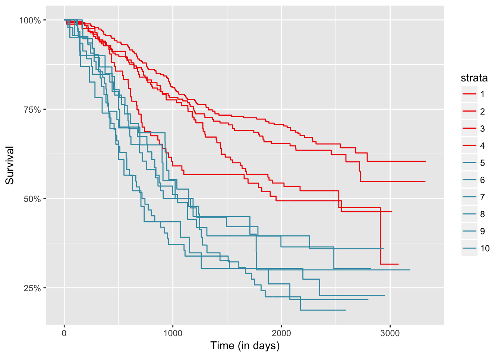

6.3 Aplication to real data
head(veteran)
## trt celltype time status karno diagtime age prior
## 1 1 squamous 72 1 60 7 69 0
## 2 1 squamous 411 1 70 5 64 10
## 3 1 squamous 228 1 60 3 38 0
## 4 1 squamous 126 1 60 9 63 10
## 5 1 squamous 118 1 70 11 65 10
## 6 1 squamous 10 1 20 5 49 0
fit <- survfit(Surv(time, status) ~ factor(celltype), data = veteran)
autoplot(fit)
survdiff(Surv(time,status)~factor(celltype), data=veteran)
## Call:
## survdiff(formula = Surv(time, status) ~ factor(celltype), data = veteran)
##
## N Observed Expected (O-E)^2/E (O-E)^2/V
## factor(celltype)=squamous 35 31 47.7 5.82 10.53
## factor(celltype)=smallcell 48 45 30.1 7.37 10.20
## factor(celltype)=adeno 27 26 15.7 6.77 8.19
## factor(celltype)=large 27 26 34.5 2.12 3.02
##
## Chisq= 25.4 on 3 degrees of freedom, p= 1.27e-05
survminer::pairwise_survdiff(Surv(time, status) ~ celltype,
data = veteran, p.adjust.method = "BH")
##
## Pairwise comparisons using Log-Rank test
##
## data: veteran and celltype
##
## squamous smallcell adeno
## smallcell 0.00134 - -
## adeno 0.00134 0.75565 -
## large 0.43731 0.00331 0.00016
##
## P value adjustment method: BH
?clustcurv_surv
res <- clustcurv_surv(time = veteran$time, status = veteran$status,
fac = veteran$celltype, algorithm = "kmeans",
nboot = 100,
cluster = TRUE, seed = 29072016)
## Checking 1 cluster...
## Checking 2 clusters...
##
## Finally, there are 2 clusters.
res
## $table
## H0 Tvalue pvalue
## 1 1 3.2108812 0.00
## 2 2 0.3799373 0.43
##
## $levels
## [1] "squamous" "smallcell" "adeno" "large"
##
## $cluster
## [1] 2 1 1 2
##
## $centers
## Call: survfit(formula = Surv(time, status) ~ aux$cluster[fac])
##
## n events median 0.95LCL 0.95UCL
## aux$cluster[fac]=1 75 71 51 30 73
## aux$cluster[fac]=2 62 57 143 110 216
##
## $curves
## Call: survfit(formula = Surv(time, status) ~ fac)
##
## n events median 0.95LCL 0.95UCL
## fac=squamous 35 31 118 82 314
## fac=smallcell 48 45 51 25 63
## fac=adeno 27 26 51 35 92
## fac=large 27 26 156 105 231
##
## attr(,"class")
## [1] "clustcurv_surv"
autoplot(res, groups_by_colour = TRUE, xlab = "Time (in days)")
Now we are going to see anoyher example with a catgorical variable with more levels.
colonCSm <- na.omit(data.frame(time = colonCS$Stime, status = colonCS$event,
nodes = colonCS$nodes))
table(colonCSm$nodes)
##
## 0 1 2 3 4 5 6 7 8 9 10 11 12 13 14 15 16 17
## 2 274 194 125 84 46 43 38 23 20 13 10 11 7 4 6 1 2
## 19 20 22 24 27 33
## 2 2 1 1 1 1
# deleting people with zero nodes
colonCSm <- colonCSm[-c(which(colonCSm$nodes == 0)), ]
table(colonCSm$nodes)
##
## 1 2 3 4 5 6 7 8 9 10 11 12 13 14 15 16 17 19
## 274 194 125 84 46 43 38 23 20 13 10 11 7 4 6 1 2 2
## 20 22 24 27 33
## 2 1 1 1 1
# grouping people with more than 10 nodes
colonCSm$nodes[colonCSm$nodes >= 10] <- 10
table(colonCSm$nodes) # 10 levels
##
## 1 2 3 4 5 6 7 8 9 10
## 274 194 125 84 46 43 38 23 20 62
model <- survfit(Surv(time, status) ~ factor(nodes), data = colonCSm)
survdiff(Surv(time,status)~factor(nodes), data = colonCSm)
## Call:
## survdiff(formula = Surv(time, status) ~ factor(nodes), data = colonCSm)
##
## N Observed Expected (O-E)^2/E (O-E)^2/V
## factor(nodes)=1 274 94 151.93 22.0901 33.9249
## factor(nodes)=2 194 74 102.87 8.1022 10.5979
## factor(nodes)=3 125 61 62.56 0.0387 0.0453
## factor(nodes)=4 84 43 38.26 0.5868 0.6434
## factor(nodes)=5 46 34 17.06 16.8249 17.5428
## factor(nodes)=6 43 27 16.43 6.8027 7.0736
## factor(nodes)=7 38 25 15.41 5.9636 6.1880
## factor(nodes)=8 23 18 7.22 16.0875 16.3765
## factor(nodes)=9 20 14 8.05 4.3931 4.4795
## factor(nodes)=10 62 49 19.21 46.2239 48.6066
##
## Chisq= 129 on 9 degrees of freedom, p= 0
survminer::pairwise_survdiff(Surv(time, status) ~ nodes,
data = colonCSm, p.adjust.method = "BH")
##
## Pairwise comparisons using Log-Rank test
##
## data: colonCSm and nodes
##
## 1 2 3 4 5 6 7 8 9
## 2 0.41644 - - - - - - - -
## 3 0.00853 0.10482 - - - - - - -
## 4 0.00221 0.04032 0.51450 - - - - - -
## 5 3.9e-09 1.8e-06 0.00072 0.03427 - - - - -
## 6 1.7e-05 0.00072 0.03750 0.22540 0.60307 - - - -
## 7 2.1e-05 0.00072 0.04219 0.25752 0.49274 0.95088 - - -
## 8 3.0e-08 4.1e-06 0.00047 0.01407 0.51450 0.30796 0.25752 - -
## 9 0.00043 0.00493 0.08152 0.23872 0.76034 0.90717 0.79064 0.51450 -
## 10 < 2e-16 1.2e-11 9.1e-07 0.00047 0.37154 0.16671 0.10386 0.95088 0.37007
##
## P value adjustment method: BH
res <- clustcurv_surv(time = colonCSm$time, status = colonCSm$status,
fac = colonCSm$nodes, algorithm = "kmeans",
nboot = 100, cluster = TRUE, seed = 300716)
## Checking 1 cluster...
## Checking 2 clusters...
##
## Finally, there are 2 clusters.
autoplot(res, groups_by_colour = FALSE, xlab = "Time (in days)")
autoplot(res, groups_by_colour = TRUE, xlab = "Time (in days)")
res$table
## H0 Tvalue pvalue
## 1 1 15.425589 0.00
## 2 2 2.364531 0.18
data.frame(res$levels, res$cluster)
## res.levels res.cluster
## 1 1 2
## 2 2 2
## 3 3 2
## 4 4 2
## 5 5 1
## 6 6 1
## 7 7 1
## 8 8 1
## 9 9 1
## 10 10 1One faster option than applying directly the `clustcurv_surv` function, that is based on boostrap techniques for detecting the number of groups, is to use the `kgroups_surv` for $k = 1, \ldots, J-1$. Then you can plot the resulted measures for each $k$ and choose the one that with the "less" measure.fun <- function(x){
kgroups_surv(time = colonCSm$time, status = colonCSm$status,
fac = colonCSm$nodes, algorithm = "kmeans", k = x)$measure
}
ts <- sapply(1:8, fun)
qplot(1:8, ts, xlab = "Number of groups", ylab = "Test estatistic value")